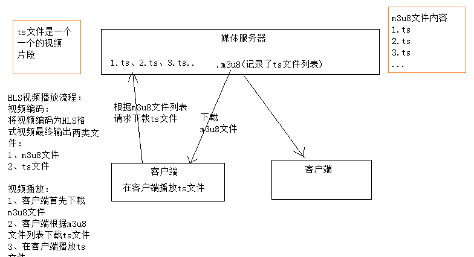
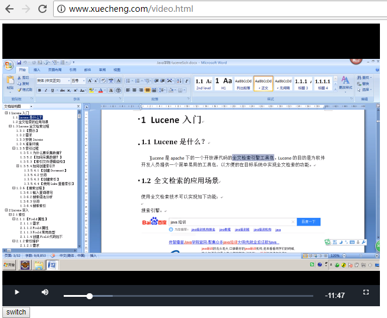
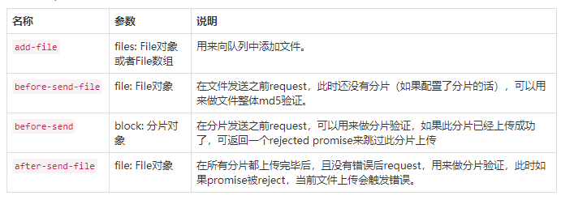

在线学习 HLS
1 在线学习需求分析
1.1 需求描述
学成在线作为在线教育网站，提供多种学习形式，包括：录播、直播、图文、社群等，学生登录进入学习中心即可在线学习，本章节将开发录播课程的在线学习功能，需求如下：
1、学生可以在windows浏览器上在线观看视频。
2、播放器具有快进、快退、暂停等基本功能。
3、学生可以方便切换章节进行学习。
什么是录播课程？
录播课程就是提供录制好课程视频，供用户在线点播，反复学习。
课程视频如何管理？
媒资管理系统专门来管理课程视频，用户视频文件上传到媒资系统，并对视频进行编码处理。
1.2 视频点播解决方案
1.2.1 流媒体
- 流媒体：
详细参考：https://baike.baidu.com/item/%E6%B5%81%E5%AA%92%E4%BD%93/98740?fr=aladdin
概括理解：流媒体就是将视频文件分成许多小块儿，将这些小块儿作为数据包通过网络发送出去，实现一边传输视频 数据 包一边观看视频。
流式传输
在网络上传输音、视频信息有两个方式：下载和流式传输。
下载：就是把音、视频文件完全下载到本机后开始播放，它的特点是必须等到视频文件下载完成方可播放，播放等待时间较长，无法去播放还未下载的部分视频。
流式传输：就是客户端通过链接视频服务器实时传输音、视频信息，实现“边下载边播放”。
流式传输包括如下两种方式：
1） 顺序流式传输
即顺序下载音、视频文件，可以实现边下载边播放，不过，用户只能观看已下载的视频内容，无法快进到未下载的视频部分，顺序流式传输可以使用Http服务器来实现，比如Nginx、Apache等。
2）实时流式传输
实时流式传输可以解决顺序流式传输无法快进的问题，它与Http流式传输不同，它必须使用流媒体服务器并且使用流媒体协议来传输视频，它比Http流式传输复杂。常见的实时流式传输协议有RTSP、RTMP、RSVP等。
流媒体系统的概要结构
通过流媒体系统的概要结构学习流媒体系统的基本业务流程。

1、将原始的视频文件通过编码器转换为适合网络传输的流格式，编码后的视频直接输送给媒体服务器。
原始的视频文件通常是事先录制好的视频，比如通过摄像机、摄像头等录像、录音设备采集到的音视频文件，体积较大，要想在网络上传输需要经过压缩处理，即通过编码器进行编码 。
2、媒体服务获取到编码好的视频文件，对外提供流媒体数据传输接口，接口协议包括 ：HTTP、RTSP、RTMP等 。
3、播放器通过流媒体协议与媒体服务器通信，获取视频数据，播放视频。
1.2.2 点播方案
本项目包括点播和直播两种方式，我们先调研点播的方案，如下：
1、 播放器通过 http协议从http服务器上下载视频文件进行播放
问题：必须等到视频下载完才可以播放，不支持快进到某个时间点进行播放
2、 播放器通过rtmp协议连接媒体服务器以实时流方式播放视频
使用rtmp协议需要架设媒体服务器，造价高，对于直播多采用此方案。
3、 播放器使用HLS协议连接http服务器（Nginx、Apache等）实现近实时流方式播放视频
HLS协议规定：基于Http协议，视频封装格式为ts，视频的编码格式为H264,音频编码格式为MP3、AAC或者AC-3。
HLS是什么？
HLS的工作方式是：将视频拆分成若干ts格式的小文件，通过m3u8格式的索引文件对这些ts小文件建立索引。一般10秒一个ts文件，播放器连接m3u8文件播放，当快进时通过m3u8即可找到对应的索引文件，并去下载对应的ts文件，从而实现快进、快退以近实时 的方式播放视频。
IOS、Android设备、及各大浏览器都支持HLS协议。

详细参考：https://baike.baidu.com/item/HLS/8328931?fr=aladdin
采用HLS方案即可实现边下载边播放，并可不用使用rtmp等流媒体协议，不用构建专用的媒体服务器，节省成本。
本项目点播方案确定为方案3。
2 视频编码
2.1 视频编码格式
详情参考 ：https://baike.baidu.com/item/%E8%A7%86%E9%A2%91%E7%BC%96%E7%A0%81/839038
首先我们要分清文件格式和编码格式：
文件格式：是指.mp4、.avi、.rmvb等 这些不同扩展名的视频文件的文件格式 ，视频文件的内容主要包括视频和音频，其文件格式是按照一 定的编码格式去编码，并且按照该文件所规定的封装格式将视频、音频、字幕等信息封装在一起，播放器会根据它们的封装格式去提取出编码，然后由播放器解码，最终播放音视频。
音视频编码格式：通过音视频的压缩技术，将视频格式转换成另一种视频格式，通过视频编码实现流媒体的传输。比如：一个.avi的视频文件原来的编码是a，通过编码后编码格式变为b，音频原来为c，通过编码后变为d。
音视频编码格式各类繁多，主要有几下几类：
MPEG系列 （由ISO[国际标准组织机构]下属的MPEG[运动图象专家组]开发 ）视频编码方面主要是Mpeg1（vcd用的就是它）、Mpeg2（DVD使用）、Mpeg4（的DVDRIP使用的都是它的变种，如：divx，xvid等）、Mpeg4 AVC（正热门）；音频编码方面主要是MPEG Audio Layer 1/2、MPEG Audio Layer 3（大名鼎鼎的mp3）、MPEG-2 AAC 、MPEG-4 AAC等等。注意：DVD音频没有采用Mpeg的。
H.26X系列 （由ITU[国际电传视讯联盟]主导，侧重网络传输，注意：只是视频编码） 包括H.261、H.262、H.263、H.263+、H.263++、H.264（就是MPEG4 AVC-合作的结晶）
目前最常用的编码标准是视频H.264，音频AAC。
提问：
H.264是编码格式还是文件格式？
mp4是编码格式还是文件格式？
2.2 FFmpeg 的基本使用
我们将视频录制完成后，使用视频编码软件对视频进行编码，本项目 使用FFmpeg对视频进行编码 。
FFmpeg被许多开源项目采用，QQ影音、暴风影音、VLC等。
下载：FFmpeg https://www.ffmpeg.org/download.html#build-windows
下载 ：ffmpeg-20180227-fa0c9d6-win64-static.zip，并解压，本教程将ffmpeg解压到了F:\devenv\edusoft\ffmpeg-20180227-fa0c9d6-win64-static\ffmpeg-20180227-fa0c9d6-win64-static下。
将F:\devenv\edusoft\ffmpeg-20180227-fa0c9d6-win64-static\ffmpeg-20180227-fa0c9d6-win64-static\bin目录配置在path环境变量中。
检测是否安装成功：
简单的测试：
将一个.avi文件转成mp4、mp3、gif等。
比如我们将lucene.avi文件转成mp4，运行如下命令：
ffmpeg -i lucene.avi lucene.mp4
转成mp3：ffmpeg -i lucene.avi lucene.mp3
转成gif：ffmpeg -i lucene.avi lucene.gif
官方文档（英文）：http://ffmpeg.org/ffmpeg.html
2.2 生成m3u8/ts文件
使用ffmpeg生成 m3u8的步骤如下：
第一步：先将avi视频转成mp4
1 | ffmpeg.exe -i lucene.avi -c:v libx264 -s 1280x720 -pix_fmt yuv420p -b:a 63k -b:v 753k -r 18 .\lucene.mp4 |
下面把各参数意思大概讲讲，大概了解意思即可，不再此展开流媒体专业知识的讲解。
-c:v 视频编码为x264 ，x264编码是H264的一种开源编码格式。
-s 设置分辨率
-pix_fmt yuv420p：设置像素采样方式，主流的采样方式有三种，YUV4:4:4，YUV4:2:2，YUV4:2:0，它的作用是根据采样方式来从码流中还原每个像素点的YUV（亮度信息与色彩信息）值。
-b 设置码率，-b:a和-b:v分别表示音频的码率和视频的码率，-b表示音频加视频的总码率。码率对一个视频质量有很大的作用，后边会介绍。
-r：帧率，表示每秒更新图像画面的次数，通常大于24肉眼就没有连贯与停顿的感觉了。
第二步：将mp4生成m3u8
1 | ffmpeg -i lucene.mp4 -hls_time 10 -hls_list_size 0 -hls_segment_filename ./hls/lucene_%05d.ts ./hls/lucene.m3u8 |
-hls_time 设置每片的长度，单位为秒
-hls_list_size n: 保存的分片的数量，设置为0表示保存所有分片
-hls_segment_filename ：段文件的名称，%05d表示5位数字
生成的效果是：将lucene.mp4视频文件每10秒生成一个ts文件，最后生成一个m3u8文件，m3u8文件是ts的索引文件。
使用VLC打开m3u8文件，测试播放效果，VLC 是一款自由、开源的跨平台多媒体播放器及框架，可播放大多数多媒体文件，以及 DVD、音频 CD、VCD 及各类流媒体协议。（http://www.videolan.org/）
2.2.1 码率的设置
码率又叫比特率即每秒传输的bit数，单位为bps(Bit Per Second)，码率越大传送数据的速度越快。
码率的计算公式是：文件大小（转成bit）/ 时长（秒）/1024 = kbps 即每秒传输千位数
例如一个1M的视频，它的时长是10s，它的码率等于
1 | 1*1024*1024*8/10/1024 = 819Kbps |
码率设置到多少才能达到最好，通过根据个人的经验或参考一些视频网台给出的参考，下图是优酷对码率的要求：
如果要将视频上传到优酷则必须按照上面的要求，如果是自己搭建视频服务器，码率设置不易过大，最终达到的视频清晰度满足业务需求即可。
3 播放器
3.1 技术选型
视频编码后要使用播放器对其进行解码、播放视频内容。在web应用中常用的播放器有flash播放器、H5播放器或浏览器插件播放器，其中以flash和H5播放器最常见。
flash播放器：缺点是需要在客户机安装Adobe Flash Player播放器，优点是flash播放器已经很成熟了，并且浏览器对flash支持也很好。
H5播放器：基于h5自带video标签进行构建，优点是大部分浏览器支持H5，不用再安装第三方的flash播放器，并且随着前端技术的发展，h5技术会越来越成熟。
本项目采用H5播放器，使用Video.js开源播放器。
Video.js是一款基于HTML5世界的网络视频播放器。它支持HTML5和Flash视频，它支持在台式机和移动设备上播放视频。这个项目于2010年中开始，目前已在40万网站使用。
官方地址：http://videojs.com/
3.2 下载video.js
Video.js： https://github.com/videojs/video.js
videojs-contrib-hls： https://github.com/videojs/videojs-contrib-hls#installation
（videojs-contrib-hls是播放hls的一个插件）
使用文档：http://docs.videojs.com/tutorial-videojs_.html
本教程使用 video.js 6.7.3 版本，videojs-contrib-hls 5.14.1版本。
下载上边两个文件，为了测试需求将其放在门户的plugins目录中。
3.3 搭建媒体服务器
正常使用video.js播放视频是通过一个网页，用户通过浏览器打开网页去播放视频，网页和视频都从web服务器请求，通常视频的url地址使用单独的域名。
3.3.1 Nginx媒体服务器
HLS协议基于Http协议，本项目使用Nginx作为视频服务器。下图是Nginx媒体服务器的配置流程图：
1、用户打开<www.xuecheng.com>上边的video.html网页
在此网页中引入视频链接，视频地址指向video.xuecheng.com
2、video.xuecheng.com进行负载均衡处理，将视频请求转发到媒体服务器
根据上边的流程，我们在媒体服务器上安装Nginx，并配置如下：
1 | #学成网媒体服务 |
3.3.2 媒体服务器代理
媒体服务器不止一台，通过代理实现负载均衡功能，使用Nginx作为媒体服务器的代理，此代理服务器作为video.xuecheng.com域名服务器。
配置video.xuecheng.com虚拟主机：
注意：开发中代理服务器和媒体服务器在同一台服务器，使用同一个Nginx。
1 | #学成网媒体服务代理 |
cors跨域参数：
Access-Control-Allow-Origin：允许跨域访问的外域地址
通常允许跨域访问的站点不是一个，所以这里用map定义了多个站点。
如果允许任何站点跨域访问则设置为*，通常这是不建议的。
Access-Control-Allow-Credentials： 允许客户端携带证书访问
Access-Control-Allow-Methods：允许客户端跨域访问的方法
video_server_pool的配置如下：
1 | #媒体服务 |
3.4 测试video.js
参考https://github.com/videojs/videojs-contrib-hls#installation
http://jsbin.com/vokipos/8/edit?html,output
1、编写测试页面video.html。1
2
3
4
5
6
7
8
9
10
11
12
13
14
15
16
17
18
19
20
21
22
23
24
25
26
27
28
29
30
31
32
33<!DOCTYPE html>
<html lang="en">
<head>
<meta http-equiv="content-type" content="text/html; charset=utf-8" />
<title>视频播放</title>
<link href="/plugins/videojs/video-js.css" rel="stylesheet">
</head>
<body>
<video id=example-video width=800 height=600 class="video-js vjs-default-skin vjs-big-play-centered" controls poster="http://127.0.0.1:90/video/add.jpg">
<source
src="http://video.xuecheng.com/video/hls/lucene.m3u8"
type="application/x-mpegURL">
</video>
<input type="button" onClick="switchvideo()" value="switch"/>
<script src="/plugins/videojs/video.js"></script>
<script src="/plugins/videojs/videojs-contrib-hls.js"></script>
<script>
var player = videojs('example-video');
//player.play();
//切换视频
function switchvideo(){
player.src({
src: 'http://video.xuecheng.com/video/hls/lucene.m3u8',
type: 'application/x-mpegURL',
withCredentials: true
});
player.play();
}
</script>
</body>
</html>
2、测试
配置hosts文件，本教程开发环境使用Window10，修改C:\Windows\System32\drivers\etc\hosts文件1
127.0.0.1 video.xuecheng.com
效果：

点击”switch”测试切换视频功能。
4 搭建学习中心前端
学成网学习中心提供学生在线学习的各各模块，上一章节测试的点播学习功能也属于学习中心的一部分，本章节将实现学习中心点播学习的前端部分。之所以先实现前端部分，主要是因为要将video.js+vue.js集成，一部分精力还是要放在技术研究。
4.1 界面原型
先看一下界面原型，如下图，最终的目标是在此页面使用video.js播放视频。
4.2 创建学习中心工程
学习中心的用户是学生，为了便于系统维护和扩展，单独创建学习中心工程：
1、从资料目录拷贝xc-ui-pc-leanring.zip 并解压到xc-ui-pc-leanring目录。
2、使用webstorm创建打开xc-ui-pc-leanring目录
3、进入xc-ui-pc-leanring目录，执行cnpm install，将根据package.json的依赖配置远程下载依赖的js包。
创建完成，xc-ui-pc-leanring工程如下：
4.2.1 配置域名
学习中心的二级域名为ucenter.xuecheng.com，我们在nginx中配置ucenter虚拟主机。1
2
3
4
5
6
7
8
9
10
11
12
13
14
15#学成网用户中心
server {
listen 80;
server_name ucenter.xuecheng.com;
#个人中心
location / {
proxy_pass http://ucenter_server_pool;
}
}
#前端ucenter
upstream ucenter_server_pool{
#server 127.0.0.1:7081 weight=10;
server 127.0.0.1:13000 weight=10;
}
4.2.2 访问
启动工程，看到下边的界面说明本工程创建完成：
4.3 调试视频播放页面
使用vue-video-player组件将video.js集成到vue.js中，本项目使用vue-video-player实现video.js播放。
组件地址：https://github.com/surmon-china/vue-video-player
上面的 xc-ui-pc-learning工程已经添加vue-video-player组件，我们在vue页面直接使用即可。
前边我们已经测试通过 video.js，下面我们直接在vue页面中使用vue-video-player完成视频播放。
导入learning_video.vue页面到course 模块下。
配置路由：
1 | import learning_video from '@/module/course/page/learning_video.vue'; |
预览效果：
请求：http://ucenter.xuecheng.com/#/learning/1/2
第一个参数：courseId，课程id，这里是测试页面效果随便输入一个ID即可，这里输入1
第二个参数：chapter，课程计划id，这里是测试页面效果随便输入一个ID即可，这里输入2
6 媒资管理
前边章节完成在线视频播放，如何实现点击课程计划播放视频呢，课程视频如何管理呢？
本节开始将对课程视频进行管理。
6.1需求分析
媒资管理系统是每个在线教育平台所必须具备的，百度百科对它的定义如下：
每个教学机构都可以在媒资系统管理自己的教学资源，包括：视频、教案等文件。
目前媒资管理的主要管理对象是课程录播视频，包括：媒资文件的查询、视频上传、视频删除、视频处理等。
媒资查询：教学机构查询自己所拥有的媒体文件。
视频上传：将用户线下录制的教学视频上传到媒资系统。
视频处理：视频上传成功，系统自动对视频进行编码处理。
视频删除 ：如果该视频已不再使用，可以从媒资系统删除。
下边是媒资系统与其它系统的交互情况：
1、上传媒资文件
前端/客户端请求媒资系统上传文件。
文件上传成功将文件存储到媒资服务器，将文件信息存储到数据库。
2、使用媒资
课程管理请求媒资系统查询媒资信息，将课程计划与媒资信息对应、存储。
3、视频播放
用户进入学习中心请求学习服务学习在线播放视频。
学习服务校验用户资格通过后请求媒资系统获取视频地址。
6.2 开发环境
6.2.1 创建媒资数据库
1、媒资文件信息
1 | @Data |
2、创建xc_media数据库
媒资系统使用mongodb数据库存储媒资信息。
6.2.2 创建媒资服务工程
媒资管理的相关功能单独在媒资服务中开发，下边创建媒资服务工程（xc-service-manage-media）。
媒资服务的配置与cms类似，导入 “资料”–》xc-service-manage-media工程，工程结构如下：
6.3上传文件
6.3.1 断点续传解决方案
通常视频文件都比较大，所以对于媒资系统上传文件的需求要满足大文件的上传要求。http协议本身对上传文件大小没有限制，但是客户的网络环境质量、电脑硬件环境等参差不齐，如果一个大文件快上传完了网断了，电断了没有上传完成，需要客户重新上传，这是致命的，所以对于大文件上传的要求最基本的是断点续传。
什么是断点续传：
引用百度百科：断点续传指的是在下载或上传时，将下载或上传任务（一个文件或一个压缩包）人为的划分为几个部分，每一个部分采用一个线程进行上传或下载，如果碰到网络故障，可以从已经上传或下载的部分开始继续上传下载未完成的部分，而没有必要从头开始上传下载，断点续传可以提高节省操作时间，提高用户体验性。
如下图：
上传流程如下：
1、上传前先把文件分成块
2、一块一块的上传，上传中断后重新上传，已上传的分块则不用再上传
3、各分块上传完成最后合并文件
文件下载则同理。
6.3.2 文件分块与合并
为了更好的理解文件分块上传的原理，下边用java代码测试文件的分块与合并。
6.3.2.1文件分块
文件分块的流程如下：
1、获取源文件长度
2、根据设定的分块文件的大小计算出块数
3、从源文件读数据依次向每一个块文件写数据。
1 | //测试文件分块方法 |
6.3.2.2文件合并
文件合并流程：
1、找到要合并的文件并按文件合并的先后进行排序。
2、创建合并文件
3、依次从合并的文件中读取数据向合并文件写入数
1 | //测试文件合并方法 |
6.3.3 前端页面
上传文件的页面内容参考：“资料”–》upload.vue文件
6.3.3.1 WebUploader介绍
如何在web页面实现断点续传？
常见的方案有：
1、通过Flash上传，比如SWFupload、Uploadify。
2、安装浏览器插件，变相的pc客户端，用的比较少。
3、Html5
随着html5的流行，本项目采用Html5完成文件分块上传。
本项目使用WebUploader完成大文件上传功能的开发，WebUploader官网地址：http://fexteam.gz01.bdysite.com/webuploader/
特性如下：
使用WebUploader上传流程如下：
6.3.3.1 钩子方法
在webuploader中提供很多钩子方法，下边列出一些重要的：

本项目使用如下钩子方法：
1）before-send-file
在开始对文件分块儿之前调用，可以做一些上传文件前的准备工作，比如检查文件目录是否创建完成等。
2）before-send
在上传文件分块之前调用此方法，可以请求服务端检查分块是否存在，如果已存在则此分块儿不再上传。
3）after-send-file
在所有分块上传完成后触发，可以请求服务端合并分块文件。
注册钩子方法源代码：
1 | WebUploader.Uploader.register({ |
6.3.3.2 构建WebUploader
使用webUploader前需要创建webUploader对象。
指定上传分块的地址：/api/media/upload/uploadchunk
1 | // 创建uploader对象，配置参数 |
6.3.3.3 before-send-file
文件开始上传前前端请求服务端准备上传工作。
参考源代码如下：
1 | type:"POST", |
6.3.3.4 before-send
上传分块前前端请求服务端校验分块是否存在。
参考源代码如下：
1 | type:"POST", |
6.3.3.5 after-send-file
在所有分块上传完成后触发，可以请求服务端合并分块文件
参考代码如下：
1 | type:"POST", |
6.3.3.6 页面效果
6.3.4 Api接口
定义文件上传的Api接口，此接收是前端WebUploader调用服务端的接口。
编写此接口需要参数前端WebUploader应用代码。
1 | Api(value = "媒资管理接口",description = "媒资管理接口，提供文件上传，文件处理等接口") |
6.3.5媒资服务端编写
6.3.5.1 业务流程
服务端需要实现如下功能：
1、上传前检查上传环境
检查文件是否上传，已上传则直接返回。
检查文件上传路径是否存在，不存在则创建。
2、分块检查
检查分块文件是否上传，已上传则返回true。
未上传则检查上传路径是否存在，不存在则创建。
3、分块上传
将分块文件上传到指定的路径。
4、合并分块
将所有分块文件合并为一个文件。
在数据库记录文件信息。
6.3.5.2 上传注册
由于上传过程复杂，开发时按业务流程分别实现。
1、配置
application.yml配置上传文件的路径：
1 | xc-service-manage-media: |
2、定义Dao
媒资文件管理Dao
1 | public interface MediaFileRepository extends MongoRepository<MediaFile,String> { |
3、Service
功能：
1）检查上传文件是否存在
2）创建文件目录
1 | @Service |
6.3.5.3 分块检查
在Service 中定义分块检查方法：
1 | //得到块文件所在目录 |
6.3.5.4 上传分块
在Service 中定义分块上传分块方法：
1 | //块文件上传 |
6.3.5.5 合并分块
在Service 中定义分块合并分块方法，功能如下：
1）将块文件合并
2）校验文件md5是否正确
3）向Mongodb写入文件信息
//合并块文件
1 | public ResponseResult mergechunks(String fileMd5, String fileName, Long fileSize, String mimetype, String fileExt) { |
6.3.5.6 Controller
1 | @RestController |